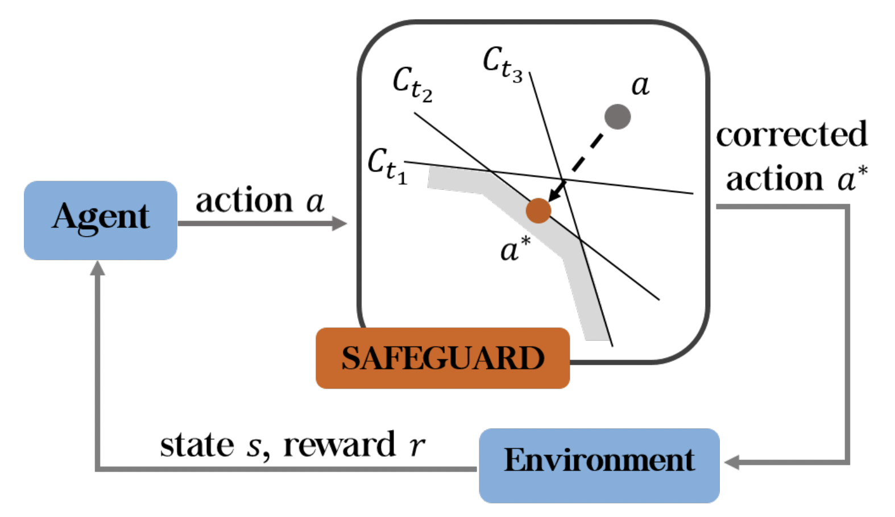
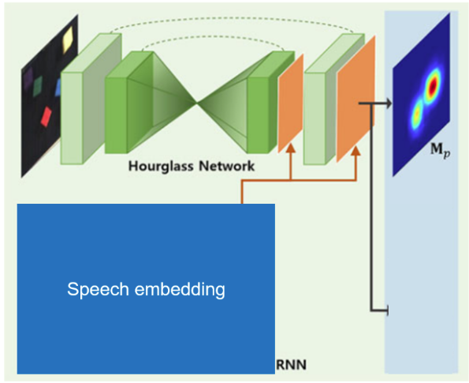
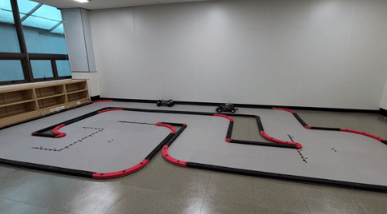

|
|
I am currently a master student at KAIST (Korea Advanced Institute of Science and Technology) advised by Jemin Hwangbo. My research interest includes Legged Robotics and Machine Learning. Before joining Jemin's group at KAIST, I received my BS at Seoul National University majoring in mechanical engineering. |
|  |
Safety Guided Policy Optimization Dohyeong Kim, Yunho Kim, Kyungjae Lee, Songhwai Oh International Conference on Intelligent Robots and Systems (IROS 2022) [Paper] [Video] |
 |
Learning Forward Dynamics Model and Informed Trajectory Sampler for Safe Quadruped Navigation Yunho Kim, Chanyoung Kim, Jemin Hwangbo Robotics: Science and Systems (RSS 2022) [Project page] [Paper] [Video] |
 |
Learning Multiple Gaits of Quadruped Robot Using Hierarchical Reinforcement Learning [Project page] |
|  |
Speech2Pickup: Speech Embedding Based Human-Robot Collaboration Model for Multi Object Robot Grasping Task [Code] |
|  |
Autonomous RC Car [Code] |